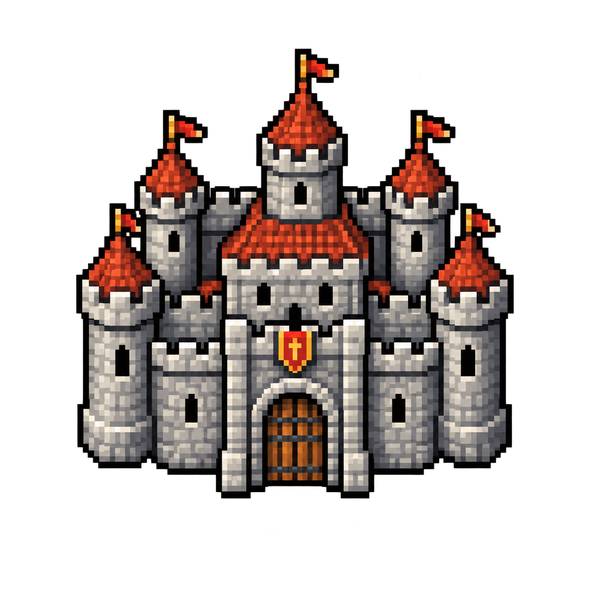

Evento de guild

Castle War
Guerra de guilds pelo trono. A guild que dominar o castelo leva bônus de caça, Blood Coins, outfit e a Guildhouse PVP.
Quando abre
- Todos os dias, às 21:30.
- Fica aberto por 60 minutos, ou fecha antes se alguma guild chegar a 100 pontos no trono.
- Avisos no servidor 5, 4, 3, 2 e 1 minuto antes, dizendo qual guild está dominante no momento.
Quem pode entrar
- Level 400 ou mais.
- Precisa estar em uma guild.
- A entrada fica na área de eventos, no teleport marcado CASTLE WAR.
- Fora do horário o teleport avisa que o evento não está aberto.
Como funciona
- Ao pisar na entrada, o personagem vai para o térreo do castelo.
- O objetivo é ficar em cima do trono. Só conta quem está no tile do trono e tem guild.
- A cada 2 minutos, a guild de quem está no trono ganha +10 pontos.
- A primeira guild a chegar em 100 pontos vence na hora e o evento fecha.
- Se os 60 minutos acabarem antes disso, vence a guild com mais pontos. Sem pontuação, ninguém ganha.
- A cada 20 pontos somados no trono (de todas as guilds), o trono muda de lugar entre 4 posições do castelo. Quem estava em cima sai do domínio e precisa achar o trono novo.
Dentro do castelo aparece o ranking das guilds (também na HUD do evento, para quem usa). O ranking em texto é enviado a cada 10 minutos para quem está na arena.
Quem recebe prêmio
Só conta quem entrou pela entrada nesta edição e, no fechamento, ainda está dentro do castelo.
Quem morreu ou foi expulso nos últimos 3 minutos ainda conta como presente para Blood Coin e para o bônus. O outfit não: ele só vai para quem está dentro no instante em que o evento fecha.
| Guild vencedora | Outras guilds presentes | |
|---|---|---|
| Blood Coins | 3, na store inbox | 1, na store inbox |
| Bônus de domínio | Sim, até a próxima abertura | Não |
| Outfit Castle Warrior | Sim, 24 horas, addon completo | Não |
| Guildhouse PVP | Passa para a guild | Não |
Se a entrega da Blood Coin falhar no fechamento, o servidor tenta de novo no próximo login. A mensagem confirma: “Você recebeu X Blood Coin(s) do Castle War.”
Bônus da guild dominante
Vale só para os membros da guild vencedora que estavam presentes no fim. Começa quando o evento fecha e acaba no momento em que o próximo Castle abre (no dia seguinte, às 21:30, se a agenda normal se mantiver). Na abertura, o bônus de todo mundo cai. A nova guild só recebe o bônus dela no fechamento.
Se ninguém pontuar no trono, não há bônus novo. A guild que já era dominante continua com a Guildhouse PVP.
Sorcerer e Druid
- +5 magic level
- +5 shielding
- +10% de experiência
- +10% de loot
- +10% na velocidade de treino (skill tries)
- +5% de chance de crítico
- +5% de dano crítico
Knight, Paladin e Monk
- +5 nas skills de combate (fist, club, sword, axe e distance)
- +5 shielding
- +10% de experiência
- +10% de loot
- +10% na velocidade de treino (skill tries)
- +5% de chance de crítico
- +5% de dano crítico
Outfit e casa
- Castle Warrior: look masculino e feminino, addon completo, por 24 horas a partir do prêmio. Depois desse prazo, o outfit sai no próximo login. Se o personagem estiver usando ele, volta para o visual de cidadão.
- Guildhouse PVP: o líder da guild vencedora fica dono da casa. Todos os membros da guild entram e usam as portas. Se a mesma guild ganhar de novo, a casa continua com ela e o acesso é atualizado.